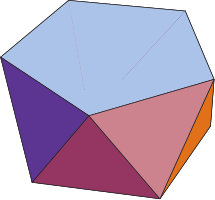
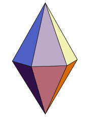
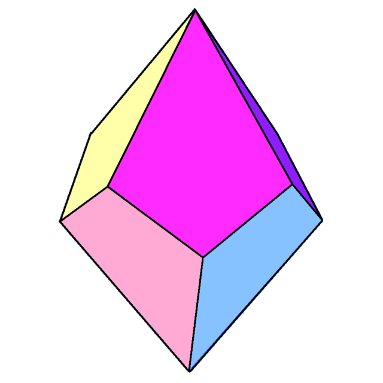

Semiregular Convex Uniform
Text.
-
Prisms
A regular prism consists of two regular N-sided polygons joined together by N squares. A regular antiprism consists of two regular N-sided polygons joined together by 2N equilateral triangles. The Square Prism and the Triangular Antiprism are the Cube and the Octahedron, respectively. The remaining regular prisms and antiprisms are closely related to Archimedean solids in the sense that they are convex polyhedra whose faces are regular polygons of two or more types that meet in the same pattern around each vertex. The distinguishing factor is that regular prisms and antiprisms do not have polyhedral group (tetrahedral, octahedral, or icosahedral) rotational symmetries.
-
Antiprisms
Text.
-
Dipyramids
The duals of the regular prisms are often called dipyramids, and the duals of the regular antiprisms are often called trapezohedra. The Square Dipyramid and the Trigonal Trapezohedron are the Octahedron and the Cube, respectively. The remaining regular dipyramids and trapezohedra are closely related to Catalan solids in the sense that they have one type of face and they have constant dihedral angles. The distinguishing factor is that regular dipyramids and trapezohedra do not have polyhedral group (tetrahedral, octahedral, or icosahedral) rotational symmetries.
-
Trapezohedra
Text.